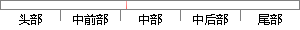

在完成系统之后需要进行对系统的测试，最主要的测试过程是功能测试与需求的回归测试。
片段位置图

相似结果|
相似片段 1：单来完成生成用于评价实现的应用系统的测试数据。任何应用程序都应该对需求进行测试，此过程应该开始于需求阶段，并一直持续到系统运行和维护阶段。(2)回归测试。验证系统中没有改变的部分仍能正确运行。回归测试
相似片段 2：新一版本的软件系统形成之后，测试人员需要重新测试软件系统，确定新版本软件系统的缺陷情况。回归测试测试的对象是之前测试过的软件系统。但是回归测试并不是只针对之前测试发现的缺陷和漏洞进行，而是要重复进行
相似片段 3：历史积累的测试资源，提高测试的自动化程度，快速高效地完成回归测试，都值得深入研究?。1．1选题依据1．1．1功能测试可回归性研究的意义在对软件系统进行回归测试时，人们总是希望在投入较少人力和时间的前提下
相似片段 4：的需求分析和设计阶段就已经开始，所以将面向对象软件测试相应的划分为oOA的测试、O。D的测试和00P的测试3个阶段，在这3个测试阶段中，可能需要进行部分或全部的回归测试．在完成这3个测试阶段之后．还要
相似片段 5：是把已经经过确认的软件纳入实际运行环境中，与其它系统成分组合在一起进行测试。其要检查已实现的软件是否满足了需求规格说明中确定了的各种需求，以及软件配置是否完全、正确，验证系统的功能是否达到设计要求
相似片段 6：％ 43．8％ O％ O％表4—1整个系统的测试结果通过修改和调试旧代码之后，再次进行了系统回归测试，即重新进行测试以确认修改没有引入新的错误或导致其他代码而产生的错误。
相似片段 7：最低级别的模块成为一个个实用工具模块，完成自身功能。这种方法使得在开发过程的早期阶段测试，最大限度地减少了对桩的需求．但是相应的需要编写大量的驱动模块，来调用这些类，并且在测试阶段晚期管理、逻辑和
相似片段 8：与系统定义需求不相符或是相矛盾的地方。系统测试的测试用例应根据需求分析说明书来设计。系统测试主要进行系统正确性测试，功能完备性测试，鲁棒性测试。可接受性测试：主要测试M&S是否满足M&S需求的。通常分成
相似片段 9：性测试 鲁棒性测试可接受性测试 主要测试M&S是否满足M&S需求的通常分成 测试和 测试两个阶段来完成回归测试 在被测试对象的某些模块被调整了以后 要对已经测试过的模块及整个测试对象进行测试 回归测试的
相似片段 10：尽可能发现模块内部的程序差错。然后，把已测试过的模块组装起来，进行组装测试，目的在于检验与软件设计相关的程序结构问题，采用黑盒测试方法来设计测试用例。完成组装测试后，对开发工作初期制定的功能需求
|
※ 片段修改建议 ※
近似词参考：- 系统：体系
- 之后：以后
- 需要：必要
- 进行：举行
- 系统：体系
- 过程：进程 历程
- 功能：功效
系统自动生成语句：在完成体系以后必要举行对体系的测试，最主要的测试进程是功效测试与需求的回归测试。
注：本片段修改建议为系统自动生成，仅供参考。